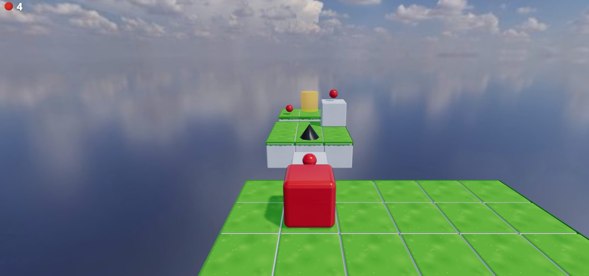

Два скриншота с разницей в два дня. Что произошло между ними
У меня есть два кадра из одной и той же игры. Между ними меньше двух суток работы, и я до сих пор не могу перестать на них смотреть, потому что разница неприлично большая для такого срока.
Игра — браузерный 3D-платформер на Three.js и Rapier. Игрок катает красный желейный куб по каменным плитам, парящим в небе. Ниже — что именно менялось, в каком порядке и что из этого дало больше всего эффекта на единицу усилий.
Было

Всё честно на месте: куб, физика, шип-конус, капли массы, финиш, счётчик в углу. Игра играется. И выглядит как школьная лабораторная по WebGL.
Разберём, что тут не так, — потому что чинить пришлось именно это.
Куб — просто красный ящик. Матовый, идеально ровный, без единого блика. Материал MeshStandardMaterial, цвет #ff0000, всё.
Трава — заливка. Ярко-зелёный прямоугольник с белыми швами между плитками. Соседние тайлы идентичны до пикселя, и глаз это моментально считывает как «сетка», а не как «мир».
Небо отражается в полу. Внизу кадра видно зеркало с облаками — это не задумка, это окружение, которое я подключил и не настроил.
Камера смотрит сверху. Кадр читается как вид на площадку. Нет ощущения, что ты внутри чего-то.
Стало

Куб стал желе: полупрозрачный, с резким бликом, с вмятинами, сплющивается при приземлении. Плиты — настоящий камень с фаской, трещинами и плющом, и соседние блоки друг на друга не похожи. Появились деревянные таблички прямо в мире. Камера опустилась почти к самому кубу, и кадр превратился в узкий каменный коридор со стенами, уходящими вверх за край экрана.
Дальше — по пунктам, что именно это дало.
Что сработало сильнее всего
Камера. Две строки конфига
Я готов спорить, что это самая выгодная правка за весь цикл:
cameraOffset: { x: 0, y: 1.5, z: 3.8 },
cameraLookAhead: { y: 0.35, z: -1.6 },Было y: 2.4, z: 4.4 — вид сверху на площадку. Стало — камера почти на уровне куба и придвинута вплотную. Ни одного нового полигона, ни одной новой текстуры. Просто другой жанр картинки.
Мораль, которую я записал себе на будущее: прежде чем неделю воевать с материалами, подвигай камеру. Может оказаться, что дело было в ней.
Соседние блоки перестали быть близнецами
Требование от владельца проекта прилетело сразу и звучало жёстко: соседние каменные блоки не должны выглядеть одинаково. На старом кадре видно, почему: одинаковые тайлы складываются в сетку, и мозг видит таблицу, а не стену.
Решается вариантом камня по детерминированному хэшу от координат тайла. Подчёркиваю — детерминированному, никакого Math.random в размещении. Иначе уровень выглядел бы по-новому при каждой перезагрузке, а скриншотные тесты сошли бы с ума и утащили меня за собой.
Контактная тень под кубом
Самый выгодный эффект по соотношению «результат / усилия» во всём проекте.
На старом кадре куб выглядит приклеенным поверх картинки. Он не стоит на траве, он над ней висит. Лечится плоскостью с радиальным градиентом под кубом, прозрачность которой зависит от высоты над землёй. Кода — десяток строк. Разница — как будто объект наконец опустили в сцену.
Если у вас что-то в 3D выглядит парящим, начните с тени под ним, а не с материала на нём.
Небо, которое ещё и светит
На старом кадре небо отражалось в полу и мешало. На новом оно работает источником освещения через IBL — панорама подсвечивает всю сцену, и камень получает мягкий естественный свет вместо плоской заливки.
За это, правда, прилетела расплата: синее небо начало отражаться в верхней грани красного куба, и она уехала в мадженту. Лечилось снижением интенсивности отражения окружения втрое. Про это будет отдельная история — там я в итоге полез читать исходники шейдеров.
Процедурные текстуры как черновик
Отдельно про то, чего на кадрах не видно.
Первые текстуры камня, травы, неба и облаков были сгенерированы кодом — ни одного файла-картинки. Не из принципа: я на том этапе просто не знал, какой именно камень мне нужен, а подбирать готовый ассет вслепую — гадание. Процедурную текстуру можно крутить параметрами прямо в коде и смотреть, куда она едет.
Когда стало понятно, что нужно, процедурный камень заменился на настоящий PBR-набор. Это не поражение генератора, это нормальный порядок: сначала черновик, который можно быстро менять, потом финальный ассет под уже понятную задачу.
Что я вынес
Серый этап надо проходить быстро, но честно. Соблазн начать с красивого огромный, но пока не работают правила — красота это украшение неработающей игры.
Дешёвые правки часто выигрывают у дорогих. Камера и тень под кубом дали больше, чем любой шейдер, и обошлись в десятки строк.
Одинаковость читается как ошибка. Повторяющийся тайл выдаёт, что мир собран из кубиков, даже если сам кубик отрисован прекрасно.
Игра лежит тут, ставить ничего не нужно: cubanoid.vercel.app
Если сравните с первым кадром и решите, что стало хуже, — напишите, мне правда интересно.